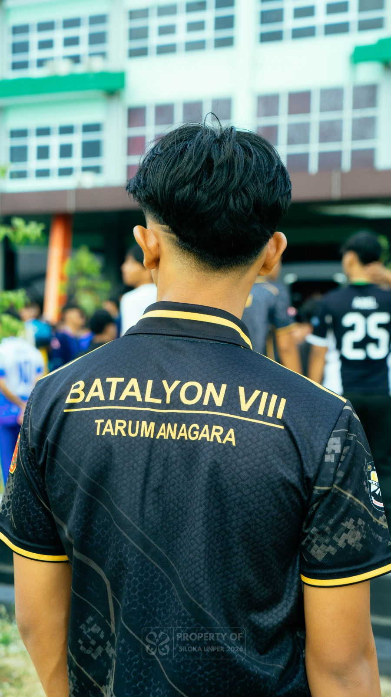
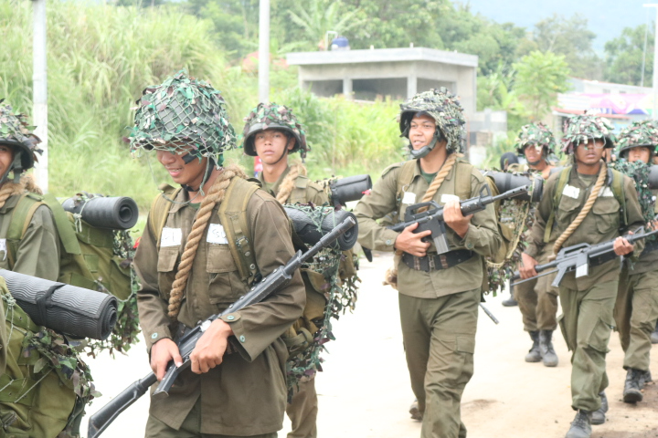
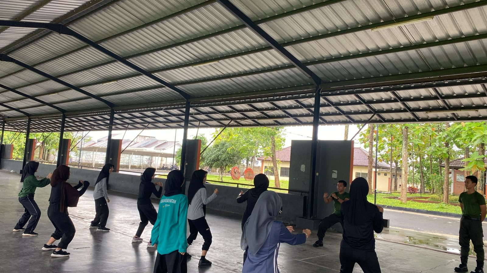
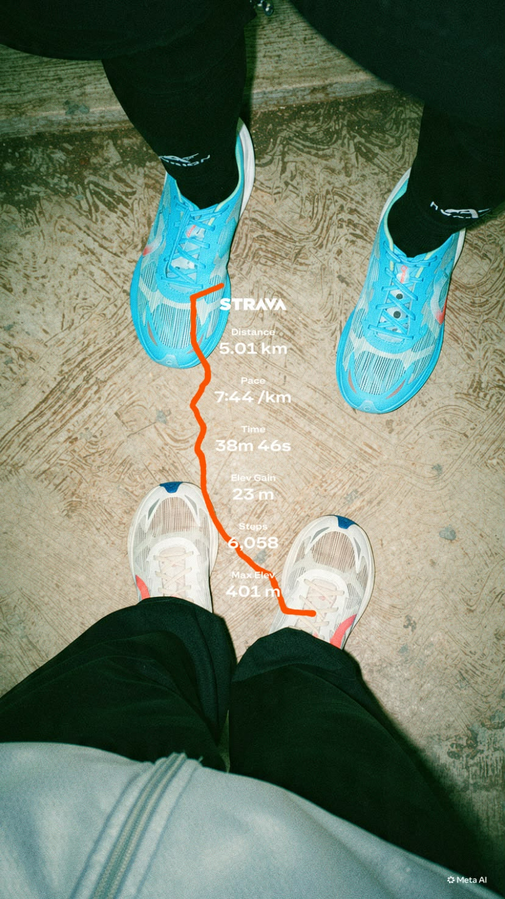
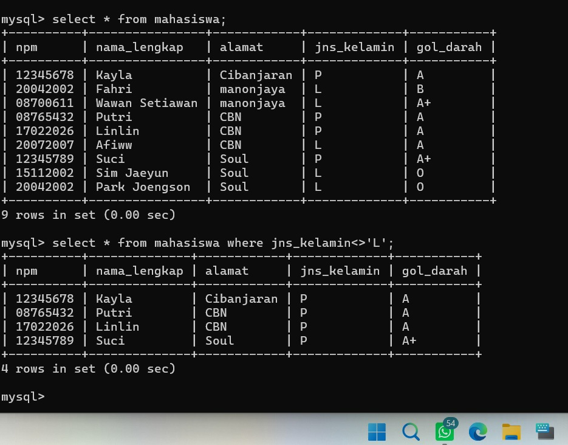

Halo, Saya
Informatika | Cyber Security | Ketahanan Mental
Mahasiswa Teknik Informatika yang berdedikasi tinggi, pantang menyerah, dan berfokus pada dunia keamanan siber & disiplin fisik.
"Þetta er saga Rafi, er sat við eldinn ok risti rúnar á spjöldin..."
(Inilah kisah tentang Rafi, yang menempa karya dengan ketajaman pikiran dan ketahanan mental.)
Saya terlahir dari keluarga sederhana. Sewaktu kecil bercita-cita menjadi guru, namun saat SMA impian saya berubah total untuk menjadi seorang prajurit Tentara. Dari sana saya mulai menempa fisik dan kedisiplinan.
Lulus SMA, ujian perjuangan dimulai dengan rentetan kegagalan:
Meski sempat pasrah, takdir membukakan jalan di jurusan Teknik Informatika. Saya memutuskan fokus dan berjuang sepenuh hati di dunia IT & Cyber Security ini.


Penggemblengan disiplin dan pola pikir pantang menyerah melalui pengalaman dan tantangan fisik.
Pelajari Detail →
Latihan kedisiplinan tubuh, refleks, dan pertahanan diri untuk membentuk postur & karakter tangguh.
Pelajari Detail →
Latihan lari jarak jauh dan calisthenics rutin untuk membangun stamina serta kekuatan fisik maksimal.
Pelajari Detail →